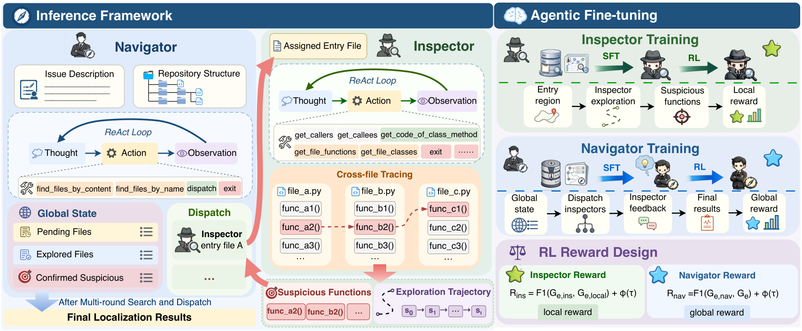
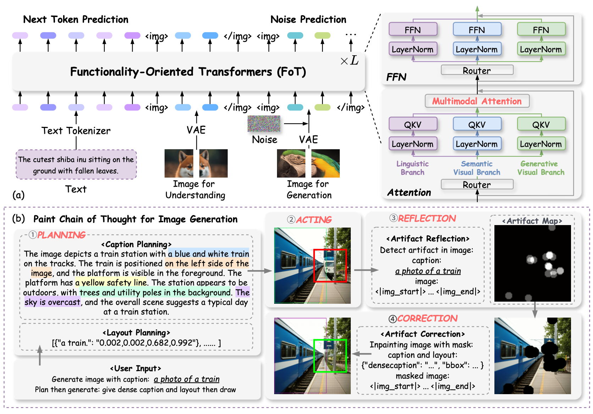
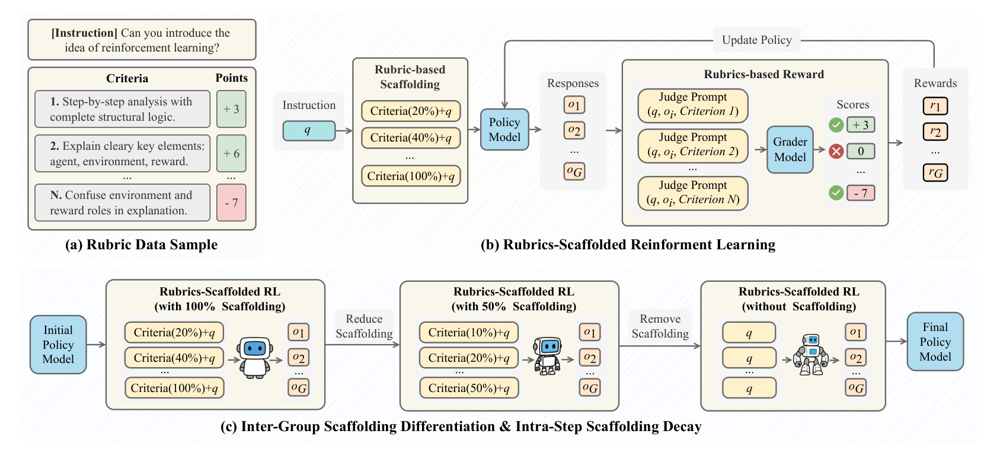
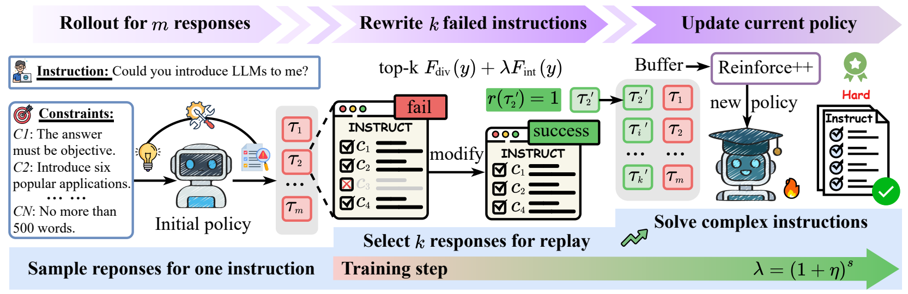
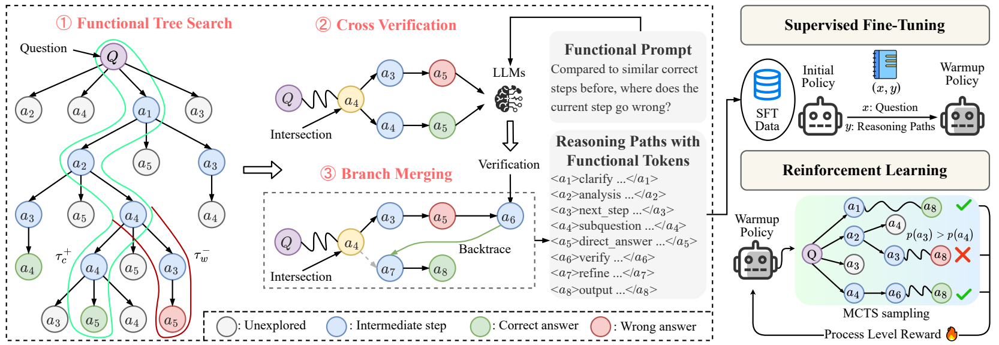
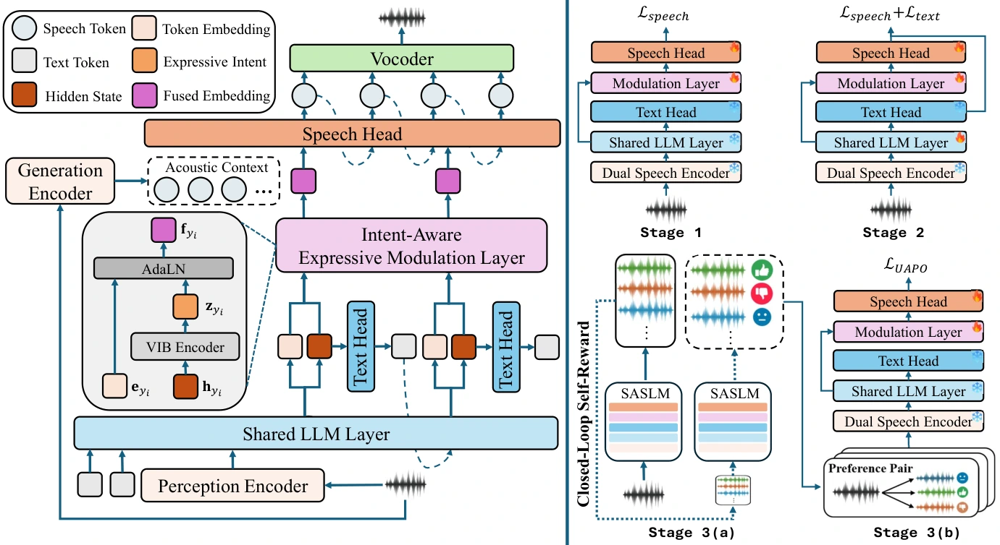

Zhejiang University · VIPA Group浙江大学 · VIPA 研究组
Wenkai Fang方文凯方文凯Wenkai Fang
Ph.D. candidate in Computer Science计算机科学与技术 · 博士研究生
I am a Ph.D. candidate at Zhejiang University and a member of the Visual Intelligence and Pattern Analysis (VIPA) Group, advised by Prof. Mingli Song. I received my B.Eng. in Agricultural Engineering from Zhejiang University in 2024.
我是浙江大学计算机科学与技术学院博士研究生，隶属于视觉智能与模式分析（VIPA）研究组，导师为宋明黎教授。我于 2024 年获得浙江大学农业工程专业工学学士学位。
My research explores reinforcement learning for language model reasoning and general-purpose intelligent agents. I aim to build agents that move beyond benchmarks and make a positive difference in everyday life.
我的研究关注利用强化学习提升大语言模型的推理能力与通用智能体，致力于推动智能体走向真实场景，服务社会与日常生活。
Research interests研究方向
Reinforcement Learning强化学习 LLM Reasoning大语言模型推理 Intelligent Agents智能体What's new近期动态Latest updates.最近的消息。
- 2026.11
NINJA, our work on context-efficient issue localization, is accepted at NeurIPS 2026.
面向高效上下文使用的问题定位研究 NINJA 已被 NeurIPS 2026 接收。
- 2025–2026
Awarded the Chen Tianzhou Scholarship and recognized as an Outstanding Graduate Student, Outstanding Graduate Student Leader, and All-Round Outstanding Graduate Student.
获评陈天洲奖学金、优秀研究生、优秀研究生干部及五好研究生。
- 2025.09
SeRL accepted at NeurIPS 2025; OpenRLHF accepted at EMNLP 2025.
Ideas into practice从想法到探索
Research & publications.研究与论文。
2026

MANGO: Unleashing Image Generation Capability of Unified Multimodal Models
Earlier preprint (FoX): Towards Enhanced Image Generation Via Multi-modal Chain of Thought in Unified Generative Models.早期预印本（FoX）：Towards Enhanced Image Generation Via Multi-modal Chain of Thought in Unified Generative Models。



Incentivizing LLM Reasoning via Reinforcement Learning with Functional Monte Carlo Tree Search
Previously: Reasoning with Reinforced Functional Token Tuning.预印本原题：Reasoning with Reinforced Functional Token Tuning。

Along the way成长与收获
Honors & awards.荣誉与奖励。
Scholarships & recognition奖学金与荣誉称号
2025–2026
- Chen Tianzhou Scholarship陈天洲奖学金
- Outstanding Graduate Student优秀研究生
- Outstanding Graduate Student Leader优秀研究生干部
- All-Round Outstanding Graduate Student五好研究生
2024–2025
- Outstanding Graduate Student优秀研究生
- Outstanding Graduate Student Leader优秀研究生干部
2024
- Outstanding Graduate of Zhejiang Province浙江省优秀毕业生
- Outstanding Graduate of Zhejiang University浙江大学优秀毕业生
2021–2023
- First-Class Scholarship, Zhejiang University · Twice浙江大学一等奖学金 · 两次
2020–2023
- Zhejiang Provincial Government Scholarship · Three times浙江省政府奖学金 · 三次
2020–2021
- Third-Class Scholarship, Zhejiang University浙江大学三等奖学金
Competitions竞赛获奖
- 2025First Prize一等奖
7th “Huawei Cup” China Graduate Artificial Intelligence Innovation Competition
第七届“华为杯”中国研究生人工智能创新大赛
- 2023Champion · Advanced Division高级组冠军
ASABE International Student Agricultural Robotics Competition
ASABE 国际大学生农业机器人设计竞赛
- 2022Second Prize二等奖
Zhejiang Provincial Physics Innovation Competition
浙江省大学生物理创新竞赛
- 2021National First Prize全国一等奖
China Agricultural Robotics Competition
中国农业机器人大赛
- 2021National Grand Prize全国特等奖
5th “Yunfeng Cup” National Green Supply Chain and Reverse Logistics Design Competition
第五届“云丰杯”全国绿色供应链与逆向物流设计大赛
Beyond research科研之外
Student leadership & service.学生工作与服务。
Part-Time Student Affairs Counselor兼职辅导员
College of Computer Science and Technology
Zhejiang University
浙江大学
计算机科学与技术学院
President, Graduate Student Association研究生会主席
College of Computer Science and Technology
Zhejiang University
浙江大学
计算机科学与技术学院
A life in snapshots把日子留在相片里
Moments along the way.沿途的瞬间。
Research, people, and the little things in between.
A photo collection in the making.科研、同行，以及其间的生活。
照片正在整理，先为回忆留个位置。
Photo to come照片待补充
Research & exchange学术交流
Conversations that open new doors.在交流中遇见新的思考。
Photo to come照片待补充
People & community同行与集体
The people who make the journey.记录一起走过的日子。
Photo to come照片待补充
Building & competing竞赛与实践
From an idea to something real.让想法成为看得见的作品。
Photo to come照片待补充
Days on campus校园日常
Small moments, familiar places.收藏熟悉风景里的小瞬间。
Photo to come照片待补充
Milestones成长时刻
A few moments to remember.为值得记住的时刻留一页。
Photo to come照片待补充
Away from the desk生活片刻
A different kind of exploration.走出书桌，继续探索。
Let's connect交流与合作
Good ideas start with a conversation.让交流成为新想法的起点。
Interested in my research? Feel free to reach out.
如果你对我的研究感兴趣，欢迎联系交流。